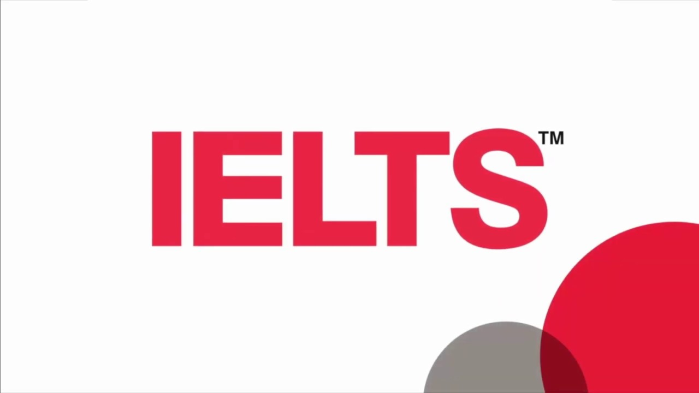

গত ডিসেম্বরে আইই এল টি এস এক্সাম দেওয়ার পর থেকেই বিভিন্ন সময়ে বন্ধু-বান্ধব, ছোট ভাই- বড় ভাই অনেকে এটা-সেটা জানতে চাইত। কিভাবে শুরু করা যায়, কিভাবে বাসায় বসে প্রিপারেশন নেওয়া যায় – এই জিনিস গুলাতেই মূলত তাদের আগ্রহ বেশি ছিল। সময় এবং সুযোগের অভাবে সব সময় তাদেরকে গুছিয়ে উত্তর দিতে পারিনি। তাই সবসময়ই বেশ খারাপ লাগত। সেই খারাপ লাগা থেকেই ভেবেছিলাম নিজের অভিজ্ঞতা, প্রস্তুতি নিয়ে একটা সিরিজ লিখব। এরপর থেকে কেউ পরামর্শ চাইলে একবারে লিঙ্ক দিয়ে দেবো। সেই উদ্দেশ্যেই এই লেখা।
যেমনটা বলেছি, এই সিরিজে আমি মূলত আমার নিজের অভিজ্ঞতা, নিজের প্রস্তুতি এবং আমার চিন্তা ভাবনা শেয়ার করবো। তাই তথ্যগত বিষয় বাদ দিয়ে অন্য মতামত গুলো অনেকের সাথে নাও মিলতে পারে। পাচটি ভাগে এই সিরিজটি শেষ করার ইচ্ছা আছে। এই লেখার প্রথম অংশে আই ই এল টি এস এক্সাম সম্পর্কে সাধারণ ধারণা দেওয়ার চেষ্টা করব।

International English Language Testing System কে সংক্ষেপে আই ই এল টি এস বলা হয় । এই পরীক্ষাটি মূলত ইংরেজি ভাষায় আপনার দক্ষতা যাচাই করে । ব্রিটিশ কাউন্সিল, আই ডি পি এবং আই ই এল টি এস অস্ট্রেলিয়া সামগ্রিকভাবে এই পরীক্ষাটি চালনা করে । বৈশ্বিক ভাবে এই পরীক্ষার গুনগত মান নিশ্চিত করা হয় । আর তাই বিশ্বব্যাপি বিভিন্ন বিশ্ববিদ্যালয়, অর্গানাইজেশন এই পরীক্ষার ফলাফলকে গুরুত্বের সাথে মূল্যায়ন করে।
বিভিন্ন দৃষ্টিভঙ্গি থেকে এই পরীক্ষাকে ভাগ করা যেতে পারে। কর্যকারিতার দিক থেকে এই পরীক্ষা দুই রকম। এক) আই ই এল টি এস জেনারেল দুই) আই ই এল টি এস অ্যাকাডেমিক । আপনি যদি উচ্চশিক্ষার জন্যে ইংরেজি ভাষায় দক্ষতা যাচাই করতে চান, তবে আপনাকে আই ই এল টি এস অ্যাকাডেমিক পরীক্ষাটি দিতে হবে। এছাড়া আপনি চাকরি সূত্রে অথবা মাইগ্রেশনজনিত কারনে ভিসার আপ্লাই করতে চাইলে আই ই এল টি এস জেনারেল পরীক্ষাটি আপনার জন্যে যথেষ্ট হবে। আমার এই সিরিজে আমি আই ই এল টি এস অ্যাকাডেমিক পরীক্ষাটি নিয়ে আলাপ-আলোচনা করব।
পরীক্ষার ধরনের ভিত্তিতে এই পরীক্ষা দুই রকম। এক) পেপার বেজড এক্সাম দুই) কম্পিউটার বেজড এক্সাম । পেপার বেজড এক্সাম গুলো হল আমরা সাধারণ যেভাবে কাগজ কলমে পরীক্ষা দিয়ে থাকি , ঠিক তেমন। অপরপক্ষে কম্পিউটার বেজড এক্সাম হল কম্পিউটারে প্রশ্নোত্তর ব্যবস্থা। আমি যতদূর জানি ঢাকায় কিছু এক্সাম সেন্টার আছে যেখানে কম্পিউটার বেজড এক্সাম দেওয়া যায়, এছাড়া বাকি সব খানে পেপার বেজড এক্সামই হয় ।
আই ই এল টি এস পরীক্ষা চারটি ভাগে বিভক্ত । প্রতিটি ভাগকে এক একটি মডিউল বলা হয় । লিসেনিং, রিডিং, রাইটিং, স্পিকিং – এই চারটি মডিউলের প্রতিটিতে ৯ এর ভেতর প্রাপ্ত স্কোরকে গড় করে আই ই এল টি এস ব্যান্ড স্কোর দেওয়া হয় । আই ই এল টি এস পরীক্ষার চারটি মডিউল একই সাথে সম্পন্ন হয় না । স্পিকিং বাদে তিনটি মডিউল এক সাথে এবং স্পিকিং অংশটি অন্য এক সময় সম্পন্ন হয়। সাধারণত পরীক্ষার ৩ দিন আগে থেকে ৩ দিন পরের যে কোন সময়ে স্পিকিং পরীক্ষা সংঘটিত হতে পারে । তবে চিন্তার কারন নেই । পর্যাপ্ত সময় আগেই আপনাকে সমস্ত পরীক্ষার শিডিউল বিস্তারিত জানিয়ে দেওয়া হবে ।
পেপার বেজড আই ই এল টি এস পরীক্ষার স্পিকিং বাদে বাকি তিনটি মডিউলে পেন্সিল, কলম দুইটিই ব্যবহার করা যায় । রিডিং এবং লিসেনিং অংশে প্রতিটি উত্তর করার জন্য সাধারণত একটি- দুইটি অক্ষর বা শব্দ লেখার প্রয়োজন পড়ে। তবে পেন্সিল ব্যবহারের সুবিধা হল – আপনি আপনার এক্সাম আন্সার পেপারের পরিচ্ছন্নতা মেইনটেইন করতে পারবেন। আই ই এল টি এস পরীক্ষায় এই জিনিসটি খুব গুরুত্বপূর্ণ। কারন অপরিচ্ছন্নতার দরুন অস্পষ্ট উত্তর গুলোকে ভুল উত্তর হিসেবে মুল্যায়ন করা হয়। তাই আমার সাজেশন থাকবে অবশ্যই পেন্সিল ব্যবহার করার।
যেহেতু এই স্কোরটির সারা বিশ্বে গ্রহণযোগ্যতা আছে, তাই সমস্ত এক্সাম সেন্টার গুলোতে বেশ কঠোরতার সাথে এই পরীক্ষাটির মান নিশ্চিত করা হয় । পরীক্ষার সময়ে আপনাকে একটি কিট ব্যাগ দেওয়া হবে যেখানে আপনি দুইটি পেন্সিল, একটি ইরেজার, একটি শার্প্নার, একটি কলম পাবেন । তাই এই সমস্ত জিনিস বাইরে থেকে নেওয়ার প্রয়োজন পড়ে না । তবে অতিরিক্ত সতর্কতা মেনে চলতে চাইলে আপনি অতিরিক্ত কিছু পেন্সিল নিয়ে যেতে পারেন। আপনি চাইলে পানির বোতল নিতে পারেন। সেক্ষেত্রে বোতলের লেভেলটি আপনাকে তুলে ফেলতে হবে ।
বলা বাহুল্য যে এই পরীক্ষার অংশ নিতে হলে আপনাকে একজন বৈধ পাসপোর্টধারী হতে হবে । পরীক্ষার দিন এই পাসপোর্ট ছাড়া আর কিছুই আপনাকে পরীক্ষার হলে নিয়ে যেতে দেওয়া হবে না । আই ই এল টি এস পরীক্ষায় এই পাসপোর্টের ব্যবহার আপনাকে মুগ্ধ করবে। উদাহরণস্বরূপ, আপনি যদি পরীক্ষার মাঝে ওয়াশরুমে যেতে চান, আপনাকে আপনার পাসপোর্টটি জমা রেখে যেতে হবে। আপনি যে সময়ে ওয়াশরুমে যাচ্ছেন এবং যে সময়ে এক্সাম রুমে ফেরত আসছেন সমস্ত তথ্যই জমা থাকবে। ওয়াশ রুম থেকে ফিরে আসলে আপনাকে আপনার পাসপোর্টটি ফেরত দেওয়া হবে। তবে আপনার নিত্য ব্যবহার্য জিনিসের কথা ভেবে চিন্তার কোন কারন নেই। প্রায় প্রতিটি এক্সাম সেন্টারেই লকার ব্যবস্থা থাকে এবং আপনি তাদের নিরাপত্তার উপর পুর্ন আস্থা রাখতে পারেন। এই লকারে আপনি আপনার ঘড়ি, মোবাইল, মানিব্যাগ, পার্স ইত্যাদি রাখতে পারবেন।
পরীক্ষার দিন নির্দিষ্ট সময়ের খানিকটা আগেই এক্সাম সেন্টারে যেতে চেষ্টা করুন। যদিও সমস্ত টাইমটেবল আপনাকে ই-মেইলের মাধ্যমে আগেই জানানো হবে । সে অনুযায়ী এক্সাম সেন্টারে প্রবেশ করুন। সিকিউরিটি চেক বাবদ একটা লম্বা সময় আপনাকে অপেক্ষা করতে হবে। এই সময়ে নিজের স্নায়ুকে বশে রাখা খুব গুরুত্বপূর্ণ। তাই চেষ্টা করুন যতটুকু সম্ভব নির্ভার থাকার। এই পরিক্ষায় কোন পাস- ফেইল নাই। চাইলে আরো হাজার বার এই এক্সাম দিতে পারবেন । তার থেকেও বড় কথা হল নিজেকে কনভিন্স করুন আত্মবিশ্বাসী হতে। নিজের প্রস্তুতির উপর ভরসা রাখুন। সিকিউরিটি চেক করার পর এক্সাম রুমে ঢুকে আর এক দফা অপেক্ষা করতে হয় । আগেই বলেছি , এই পরীক্ষার সমস্ত ফরমালিটিস খুব কঠোরভাবে নিয়ন্ত্রণ করা হয় । তাই ধৈর্য ধরার অনুশীলন করাটাও বেশ গুরুত্বপূর্ণ বলে মনে হয় ।
আর একটি বিষয় বেশ গুরুত্বপূর্ণ। শুনতে হাস্যকর শোনালেও আমার মনে হয় এটি জানা থাকা দরকার। প্রতিটি আই ই এল টি এস পরীক্ষার এক্সাম রুমের তাপমাত্রা ২২-২৪ ডিগ্রি সেলসিয়াসের মধ্যে নিয়ন্ত্রণ করা হয় । আপনি আপনার প্রয়োজন অনুসারে পরিবর্তন করতে পারবেন না। তাই ঋতু অনুযায়ী প্রস্তুত হয়ে যাওয়া আবশ্যক। আপনি চাইলে হালকা গরম কাপড় নিতে পারবেন আপনার কম্ফোর্টনেসের জন্য।
আমি পরীক্ষা দিয়েছি খুলনাতে। আমার কাছে অনেকেই কোচিং সেন্টার সম্পর্কে জানতে চান । তাদের জন্যে এই অংশ টুকু। এখন ইন্টারনেটের এতো প্রসার বেড়েছে যে আপনি চাইলে দুনিয়াটাও উলটে ফেলতে পারবেন ইন্টারনেট থেকে তথ্য নিয়ে। আই ই এল টি এস পরীক্ষা তো সে সাপেক্ষে কিছুই নয় । তবে মানুষ হিসেবে যারা আমার মত একটু অলস প্রজাতির তাদের জন্যে অনলাইন কোচিং কতটুকু ফলপ্রসূ সেই প্রশ্নটি থেকেই যায়। তাই আমি সুযোগ থাক্লে কোচিং করার পরামর্শ দেই । নিজে শুরু করলে প্রশ্ন ধাচ বুঝতে না পেরে অনেকেই হতাশ হয়ে পড়ে । সেক্ষেত্রে আর আগানো সম্ভব হয় না। তাই আমার কাছে কোচিং করাকে বেশ যুক্তিযুক্ত মনে হয় । খুলনায় মোটের উপর লেক্সিকন এবং প্রোজেক্ট হেডওয়ে – এই দুইটি আই ই এল টি এস কোচিং আছে বলে আমার জানা আছে। এর মাঝে আমি প্রোজেক্ট হেডওয়েতে কোচিং করেছিলাম। লেক্সিকনে যেহেতু যাইনি, তাই আমি তুলনা করতে পারব না । তবে আমার আই ই এল টি এস স্কোরের পেছনে আমার যতটুকু চেষ্টা , প্রোজেক্ট হেডওয়ের সমস্ত স্টাফের ঠিক ততটুকুই অবদান। তাই কেউ জিজ্ঞাসা করলে আমি এক বাক্যে প্রোজেক্ট হেডওয়েকে রেফার করি । ওখানকার সবার আন্তরিকতা আপনাকে মুগ্ধ করবে। সত্যি বলতে তারা যেভাবে আপনাকে ফ্যামিলির মত ট্রিট করবে, আপনার ক্যাপাবিলিটিতে বিশ্বাস করবে , আপনি নিজেই তখন বিশ্বাস করতে শুরু করবেন যে আপনার দ্বারা ভালো একটি স্কোর করা সম্ভব। আর এই আত্মবিশ্বাস ভালো একটি স্কোর করার জন্যে খুব গুরুত্বপূর্ণ।
এবার আসা যাক এক্সাম ফী – এর ব্যাপারে। এক্সাম ফী সময়ভেদে ১৪,০০০ থেকে ১৭,০০০ টাকার মধ্যে উঠানামা করে। এখন খুব সম্ভবত এক্সাম ফী ১৭,০০০ টাকা। এই ফী- এর ভেতরে আপনার যাবতীয় পরীক্ষা সরঞ্জাম এবং একটি সনদ অন্তর্ভুক্ত।
পরীক্ষার শুরু হয় লিসেনিং টেস্টের মাধ্যমে। তারপর ক্রমান্বয়ে রিডিং এবং রাইটিং টেস্ট সম্পন্ন হয়। আমি প্রতিটি মডিউলের জন্যে আলাদা একটি আর্টিকেল লেখার চেষ্টা করব। সেখানে ঐ মডিউল এর প্যাটার্ন এবং প্রস্তুতি সম্পর্কে বিস্তারিত লিখব। প্রশ্ন ও উত্তরপত্র আদান-প্রদানের জন্যে প্রতি দুইটি মডিউলের মাঝে ৫-১০ মিনিট সময় লাগে। প্রসঙ্গত উল্লেখ্য যে, এই সময়ে আপনি ওয়াশরুমে যেতে পারবেন না। শুধু পরীক্ষা চলাকালীন আপনি ওয়াশরুম ব্যবহার করতে পারবেন।
দক্ষতা যাচাইয়ের যে কোন পরীক্ষাকে দুইটি উপায়ে আপ্রোচ করা যায় বলে আমার মনে হয়। এক) নিজের মাঝে সেই দক্ষতাটি একদম গেঁথে সেই পরীক্ষাকে ফেস করা। দুই) আর দশটা পরীক্ষার মত একেও শুধু একটি “পরীক্ষা” হিসেবেই দেখা। প্রথম পদ্ধতিটি বড় এবং সময় সাপেক্ষ । এর জন্য প্রয়োজন একটা লম্বা সময় ধরে বিভিন্ন অনুশীলন করে নিজেকে প্রস্তুত করা । তবে এই পদ্ধতির শুবিধা হল একবার আপনি নিজেকে দক্ষ করে তুলতে পারলে , তা স্থায়ী হবে এবং এই দক্ষতা আপনার থেকে বিলুপ্ত হবার সুযোগ থাকবে শুন্যের কোঠায়। সন্দেহাতীত ভাবেই এই পদ্ধতি কঠিন। দ্বিতীয় পদ্ধতিটি মূলত অনুশীলন নির্ভর । তবে যেহেতু এই জাতীয় পরীক্ষার কোন সিলেবাস থাকে না, তাই এই পদ্ধতি বেশ বিপদজনক। হাতে পর্যাপ্ত সময় থাকলে প্রথম পদ্ধতিটি যে উত্তম , সেটি আলাদা করে বলার প্রয়োজন বোধ করছি না ।
আই ই এল টি এস পরীক্ষা দেওয়ার সিদ্ধান্ত নেওয়ার সময় আর একটি অতি গুরুত্বপূর্ণ বিষয় হল প্রয়োজনের সময়কাল বিবেচনা করা। কারন একটি আই ই এল টি এস স্কোরের ভ্যালিডেশন থাকে দুই বছর। অর্থাৎ, ২০১৯ সালের ডিসেম্বরে আপনি স্কোর পেয়ে গেলে ২০২১ সালের ডিসেম্বর পর্যন্ত আপনি এই স্কোরটি ব্যবহার করতে পারবেন। তাই স্কোরটি আপনি কবে ব্যবহার করবেন – এটি মাথায় রেখে পরীক্ষার সময় নির্ধারন করুন। কারন আপনি নিশ্চয়ই চাইবেন না আপনার সাধের আই ই এল টি এস স্কোরটি অকারন নষ্ট হোক। এই ছিল আই ই এল টি এস পরীক্ষা সম্পর্কে প্রাথমিক কিছু কথা বার্তা। এই পরীক্ষা সম্পর্কে আরো জানতে চাইলে আপনি ভিজিট করতে পারেন-